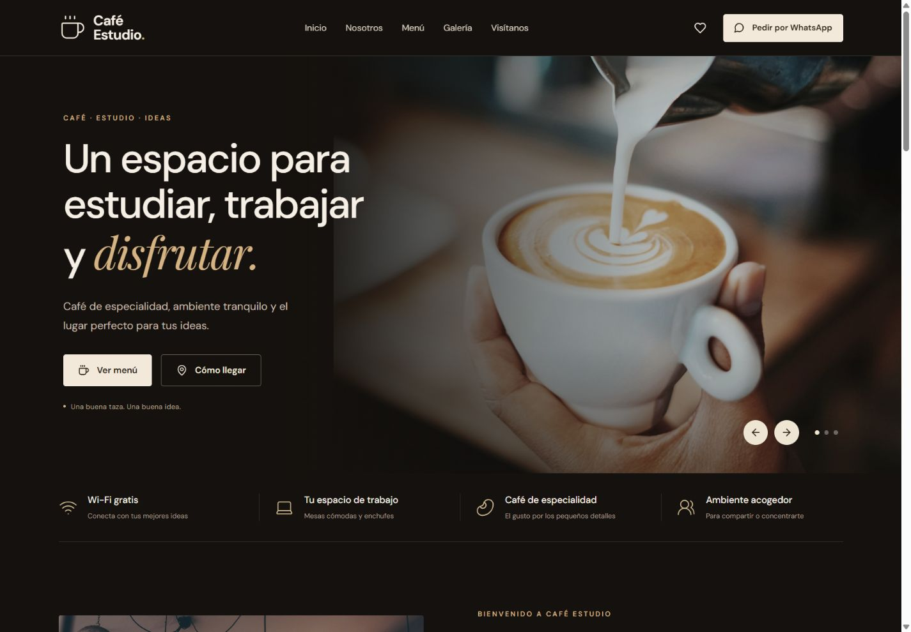

↗
Diseño y desarrollo web.
Una primera impresión que abre conversaciones.
Sitios web que expresan quién eres y ayudan a tus clientes a encontrar lo que buscan.
Web corporativaLanding pagesCatálogos digitales
DISEÑO, CÓDIGO Y VISIÓN.
GUATEMALA · DISPONIBLES PARA CREARDiseñamos sitios web, creamos sistemas y conectamos procesos. Tecnología hecha para lo que tu negocio necesita hoy y lo que viene después.
Hablemos de tu proyecto ↗Explorar soluciones ↓WEB & DISEÑO
Una presencia que te representa.
Escuchamos lo que necesitas y lo convertimos en herramientas claras, útiles y fáciles de usar. Desde tu primera web hasta un sistema que simplifica tu día.
Una primera impresión que abre conversaciones.
Sitios web que expresan quién eres y ayudan a tus clientes a encontrar lo que buscan.
Más orden. Mejores decisiones.
Organiza tus operaciones con una herramienta diseñada alrededor de tu forma de trabajar.
Menos repetir. Más avanzar.
Conecta tus herramientas y simplifica las tareas que hoy te quitan tiempo, con control en cada paso.
Explora Café Estudio, nuestra primera demo de cafetería, y una propuesta visual de sistema de gestión.

PROYECTO DEMO / REACT↗Panel de gestión · Información y seguimiento
Café Estudio es una demo funcional de ONE CODE; el panel de gestión es un concepto visual. Ninguno se presenta como encargo de un cliente real.
No necesitas tener todas las respuestas. Empecemos por lo que quieres mejorar.
Una web clara para explicar lo que haces, mostrar tus servicios y facilitar el siguiente contacto.
Lo digital no tiene que ser complicado.
Solo tiene que estar bien pensado.
Sin perderte entre términos técnicos. Un proceso cercano, con avances que puedes ver y decisiones que puedes entender.
Conocemos tu negocio, tu idea y lo que quieres mejorar. Encontramos juntos el punto de partida.
CONVERSACIÓN Y OBJETIVOSDefinimos el alcance, la propuesta visual y los tiempos. Sabes qué vamos a construir y cuánto cuesta.
PROPUESTA Y DISEÑODiseñamos, desarrollamos y probamos. Revisamos los avances contigo antes de dar el siguiente paso.
DESARROLLO Y VALIDACIÓNPonemos tu proyecto en marcha, te explicamos cómo usarlo y acordamos el acompañamiento que necesitas.
ENTREGA Y ACOMPAÑAMIENTOPOR SI TE LO PREGUNTAS
Claro. Podemos comenzar con lo esencial y definir mejoras por etapas, resolviendo primero lo que más aporta a tu negocio.
Depende del alcance, contenido y funciones. Recibes una propuesta con entregables, tiempos y costos antes de comenzar. Dominio, alojamiento y servicios externos se detallan cuando corresponda.
Sí. Diseñamos para celulares, tabletas y computadoras, cuidando la lectura, navegación y facilidad de uso.
Cuéntanos qué haces, qué problema quieres resolver y qué tienes en mente. Tu logo, contenido y referencias nos ayudan a definir la dirección.
Tu próxima web. Ese sistema que necesitas.
La idea que llevas tiempo imaginando.